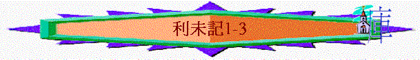

|
與神同住的人生──要聖潔(分別為聖歸於神) |
||||
|
人的奉獻--要蒙神悅納 |
人的生活--要分別出來 |
人的事奉--要尊神為聖 |
人的日子--要記念真神 |
人的產業--要歸神為聖 |
|
１－１０ |
１１－２０ |
２１－２２ |
２３－２４ |
２５－２７ |
～當會幕被建立，神的榮光充滿幕子，祂願與選民同住，選民或許會想藉供物奉獻，向神表達一些心意，要注意甚麼事情？1-10章主要題及人的獻上所要留意的事，而1-6:7集中在百姓的獻祭方式，而6:8-10:20則集中在祭司身上。
＊甘願的獻上
「耶和華從會幕中呼叫摩西，對他說：「你曉諭以色列人說：你們中間若有人獻供物給耶和華，要從牛群羊群中獻牲畜為供物。」1:1-2
～「若有人獻供物」，神應知人是有願意甘心獻上的心；不是被逼的，是想到偉大的神住在中間，人自願的獻上。
＊應守的規條
「這就是燔祭、素祭、贖罪祭、贖愆祭，和平安祭的條例，並承接聖職的禮，都是耶和華在西乃山所吩咐摩西的，就是他在西乃曠野吩咐以色列人獻供物給耶和華之日所說的。」利7:37-38
「耶和華對摩西說：「你還要曉諭以色列人說：凡以色列人，或是在以色列中寄居的外人，把自己的兒女獻給摩洛的，總要治死他；本地人要用石頭把他打死。」利20:1-2
「他的供物若以牛為燔祭，就要在會幕門口獻一隻沒有殘疾的公牛，可以在耶和華面前蒙悅納。」利1:3
～1-10章題及獻祭的條例，選民應以此方式獻祭，這才蒙神悅納
～或許因為當時在外邦文化中，有很多異教的方式，例如將自己的女兒獻給假神，所以選民要分別出來，不是所有供獻的方式也是神喜悅，選民也當遵守奉獻的規例。
＊真理的應用
～新約常借用舊約很多獻祭的事情，來表達一些真理及預表(下文會題及)
1.百姓的奉獻(1-6:7)
A.燔祭----生命的祭(1)
「他的供物若以牛為燔祭，就要在會幕門口獻一隻沒有殘疾的公牛，可以在耶和華面前蒙悅納。」1:3
a.字義
～「燔」字本指「上升之物」，是人類其中一種最古的宗教禮儀
b.祭物
「他的供物若以牛為燔祭，就要在會幕門口獻一隻沒有殘疾的公牛，可以在耶和華面前蒙悅納。」1:3
「人的供物若以綿羊或山羊為燔祭，就要獻上沒有殘疾的公羊。」1:10
「人奉給耶和華的供物，若以鳥為燔祭，就要獻班鳩或是雛鴿為供物。」1:14
～祭物是活的動物，按各人的能力，有以下三類
(1)牛----沒有殘疾的公牛
(2)羊----沒有殘疾的公綿羊、公山羊
(3)鳥----班鳩、雛鴿
～燔祭的供物多數是公的，可能即或獻上公，也不影響的生產(或以公代表基督的獻上)
c.地點
～「在會幕門口」，人獻供物給神，不可在別處獻的，只能在神指定的地點，也避免他們日後在別處獻祭給假神。
～而宰祭牲的地方通常在壇的北處，而壇的東邊是倒灰的地方，西邊有洗濯盆，南邊有上的斜坡
d.方式
「耶和華從會幕中呼叫摩西，對他說：「你曉諭以色列人說：你們中間若有人獻供物給耶和華，要從牛群羊群中獻牲畜為供物。「他的供物若以牛為燔祭，就要在會幕門口獻一隻沒有殘疾的公牛，可以在耶和華面前蒙悅納。他要按手在燔祭牲的頭上，燔祭便蒙悅納，為他贖罪。」1:1-4
(1)獻祭的人
(A)到會幕門口
(B)按手在祭牲頭上
(C)把祭牲宰了(祭司和利未人是可以幫助的)
(D)剥去祭牲的皮
(E)切成塊子
(F)用水洗臟腑與腿
(2)祭司
(A)把祭牲的血接在盆裏
(B)把血灑在壇的周圍
(C)整埋壇上的火
(D)把祭肉放在火上
(E)把素祭燒在祭肉上(民15:1-10)
(F)次日早晨，把壇上的灰倒在壇的東邊(6:10-16)
(G)脫去聖衣，穿上別的衣服，把灰拿到營外潔淨之處(6:11)
～但若是獻鳥的，主要工作則是祭司作；人不用按手在鳥身上
「人奉給耶和華的供物，若以鳥為燔祭，就要獻斑鳩或是雛鴿為供物。祭司要把鳥拿到壇前，揪下頭來，把鳥燒在壇上；鳥的血要流在壇的旁邊；又要把鳥的嗉子和髒物（髒物：或作翎毛）除掉，丟在壇的東邊倒灰的地方。要拿著鳥的兩個翅膀，把鳥撕開，只是不可撕斷；祭司要在壇上、在火的柴上焚燒。這是燔祭，是獻與耶和華為馨香的火祭。」1:14-17
(A)帶到壇前
(B)揪下頭來
(C)把鳥頭燒在壇上(文理譯本作祭司携之壇前，扭去其首而焚於壇)
(D)鳥的血流在壇旁邊，(因鳥的血不多，祭司不用將血接在盆裏)
(E)把鳥的嗉子(鳥喉嚨下面放食物的地方)和髒物丟在壇的東邊
(F)把鳥撕開，但不可撕斷
(G)在壇上在火的柴上焚燒
e.血
(1)牛、羊的血----灑在燔祭壇的周圍
(2)鳥的血----流在燔祭壇的旁邊
f.焚燒
～燔祭是火祭的一種(1:9)，是要用火的
～一切全燒在壇上
g.剩餘
(1)牛羊的皮----歸與祭司
「獻燔祭的祭司，無論為誰奉獻，要親自得他所獻那燔祭牲的皮。」7:8
(2)鳥的嗉子和髒物丟在壇的東近
h.意義
(1)朝見神的供物
「你曉諭以色列人說：你們中間若有人獻供物給耶和華，要從牛群羊群中獻牲畜為供物。」1:2
～是人對神的禮物，每逢安息日，日朔、新年、各大節期、每日早晨所獻的先是燔祭，而很多儀式也有燔祭的
～也代表人來到神面前，不可空手朝見神
～但當會眾犯罪，即必須先獻贖罪祭，才獻上燔祭的
(2)贖人罪的方法
「他要按手在燔祭牲的頭上，燔祭便蒙悅納，為他贖罪。」1:4
～燔祭有贖罪的作用，人來到神面前，人是有不潔的，可以透過燔祭作贖罪之用。
～「按手在燔祭的頭上」----即代表憑信將自己的罪交與祭牲(按手原文可譯重壓)，由祭牲代獻祭的人，用生命(血)來作贖罪。
～「贖罪」有「遮蓋」意思
i.果效
「但燔祭的臟腑與腿要用水洗。祭司就要把一切全燒在壇上，當作燔祭，獻與耶和華為馨香的火祭。」1:9
(1)神悅納
(2)人得赦
(3)感馨香
～馨香可能也代表神悅納，悅此祭
j.真理----生命的祭
「所以弟兄們，我以神的慈悲勸你們，將身體獻上，當作活祭，是聖潔的，是神所喜悅的；你們如此事奉乃是理所當然的。」羅12:1
～羅馬書引用活祭(燔祭是焚燒活物的祭)來代表信徒當將整個人的生命全然奉獻與主
～所以從燔祭中我們可以看到如何將生命獻上
(1)要甘心
「你曉諭以色列人說：你們中間若有人獻供物給耶和華，要從牛群羊群中獻牲畜為供物。他的供物若以牛為燔祭，就要在會幕門口獻一隻沒有殘疾的公牛，可以在耶和華面前蒙悅納。」利1:2-3
(2)要聖潔
「他的供物若以牛為燔祭，就要在會幕門口獻一隻沒有殘疾的公牛，可以在耶和華面前蒙悅納。」利1:3
「那人要剝去燔祭牲的皮，把燔祭牲切成塊子。」利1:6
「但燔祭的臟腑與腿要用水洗。祭司就要把一切全燒在壇上，當作燔祭，獻與耶和華為馨香的火祭。」利1:9
「又要把鳥的嗉子和髒物（髒物：或作翎毛）除掉，丟在壇的東邊倒灰的地方。」利1:16
(3)要投入
「他要按手在燔祭牲的頭上，燔祭便蒙悅納，為他贖罪。」利1:4
(4)要徹底
「他要在耶和華面前宰公牛；亞倫子孫作祭司的，要奉上血，把血灑在會幕門口、壇的周圍。那人要剝去燔祭牲的皮，把燔祭牲切成塊子。」1:5-6
「要把燔祭牲切成塊子，連頭和脂油，祭司就要擺在壇上火的柴上；但臟腑與腿要用水洗，祭司就要全然奉獻，燒在壇上。這是燔祭，是獻與耶和華為馨香的火祭。」1:12-13
(5)按所能
「他的供物若以牛為燔祭，就要在會幕門口獻一隻沒有殘疾的公牛，可以在耶和華面前蒙悅納。」1:3
「人的供物若以綿羊或山羊為燔祭，就要獻上沒有殘疾的公羊。」1:10
「人奉給耶和華的供物，若以鳥為燔祭，就要獻斑鳩或是雛鴿為供物。」1:14
k.預表
「所以基督到世上來的時候，就說：神啊，祭物和禮物是你不願意的；你曾給我預備了身體。燔祭和贖罪祭是你不喜歡的。那時我說：神啊，我來了，為要照你的旨意行；我的事在經卷上已經記載了。以上說：「祭物和禮物，燔祭和贖罪祭，是你不願意的，也是你不喜歡的（這都是按著律法獻的）」；」來10:5-9
～代表基督也將自己全然獻上，成就神的旨意
B.素祭----生活的祭(2)
「若有人獻素祭為供物給耶和華，要用細麵澆上油，加上乳香，」2:1
a.字義
～此名詞在希伯來文含有禮物或貢物的意思
b.祭物
～燔祭是獻活物，要流血的，素祭則是從生活上的基本材料/食物用作獻祭(所以不用流血的)，可分為三頪
「若有人獻素祭為供物給耶和華，要用細麵澆上油，加上乳香，帶到亞倫子孫作祭司的那裡；祭司就要從細麵中取出一把來，並取些油和所有的乳香，然後要把所取的這些作為紀念，燒在壇上，是獻與耶和華為馨香的火祭。」2:1-2
「若用爐中烤的物為素祭，就要用調油的無酵細麵餅，或是抹油的無酵薄餅。若用鐵鏊上做的物為素祭，就要用調油的無酵細麵，分成塊子，澆上油；這是素祭。」2:4-6
「若向耶和華獻初熟之物為素祭，要獻上烘了的禾穗子，就是軋了的新穗子，當作初熟之物的素祭。」2:14
(1)細麵
(2)餅
(A)爐中烤的----用調油的無酵細麵餅或是抺油的無酵薄餅
～這爐是能移動之罐形瓦罐子，他們把爐子燒熱後，就將餅烤在其中，蓋上蓋子，在剛熟的時候是軟的，後來就變脆，在爐外面他們也烤薄餅
(B)鐵鏊上烙的----用調和的無酵細麵，分成塊子，澆上油
(C)煎盆煠的----油與細麵作成的(煎盆是指能盛油的深鍋子)
(3)初熟之物----禾穗子(烘了的)
～以上素祭要加上三種其他材料
(A)油
(B)乳香
(C)鹽
c.地點
「要把這些東西做的素祭帶到耶和華面前，並奉給祭司，帶到壇前。」2:8
～帶到祭司及壇前
d.方式
(1)交給祭司
(2)從其中取一把，並加上油與乳香
(3)燒在壇上
e.焚燒
「祭司要把其中作為紀念的，就是一些軋了的禾穗子和一些油，並所有的乳香，都焚燒，是向耶和華獻的火祭。」」2:16
(1)細麵----一把(2:2)
(2)餅----每樣一個(2:9,7:9)
(3)禾穗子----一些(2:16)
(4)油一些(2:15)
(5)乳香、鹽----全部(2:2、13、16)
f.剩餘的
(1)眾祭司----得餘下的麵、禾穗
(2)獻祭的祭司----得剩的餅
「凡在爐中烤的素祭和煎盤中做的，並鐵鏊上做的，都要歸那獻祭的祭司。」7:9
g.意義
(1)獻給神的供物
～人若想從生活中獲得的麵、餅或禾穗獻給神，可以此為禮物
(2)供給祭司的需要
h.果效
「素祭所剩的要歸給亞倫和他的子孫。這是獻與耶和華的火祭中為至聖的。」2:10
(1)馨香
(2)至聖
～可能不用流血，也沒有贖罪意味，也沒有酵，所以是至聖的
i.真理----生活的祭
「不要效法這個世界，只要心意更新而變化，叫你們察驗何為神的善良、純全、可喜悅的旨意。」羅12:2
～羅12:1題及人將自己為活祭獻給神，之後題及人在生活中如何分別出來，過一個討神喜悅的生活
～素祭就是生活的祭，日常生活基本的材料，人也當將自己的生活獻給神
(A)馨香
「帶到亞倫子孫作祭司的那裡；祭司就要從細麵中取出一把來，並取些油和所有的乳香，然後要把所取的這些作為紀念，燒在壇上，是獻與耶和華為馨香的火祭。」利2:2
「感謝神！常帥領我們在基督裡誇勝，並藉著我們在各處顯揚那因認識基督而有的香氣。」林後2:14
～基督徒的生活也要馨香，我們要將基督的香氣(用言語及生命見証)傳給其他人
(B)至聖
「素祭所剩的要歸給亞倫和他的子孫。這是獻與耶和華的火祭中為至聖的。「凡獻給耶和華的素祭都不可有酵；因為你們不可燒一點酵、一點蜜當作火祭獻給耶和華。」利2:10-11
「那召你們的既是聖潔，你們在一切所行的事上也要聖潔。因為經上記著說：「你們要聖潔，因為我是聖潔的。」」彼前1:15-16
「你們既是無酵的麵，應當把舊酵除淨，好使你們成為新團；因為我們逾越節的羔羊基督已經被殺獻祭了。」林前5:7
～我們的生活也要分別為聖，將酵(罪)除去
(C)和睦
「凡獻為素祭的供物都要用鹽調和，在素祭上不可缺了你神立約的鹽。一切的供物都要配鹽而獻。」利2:13
「你們的言語要常常帶著和氣，好像用鹽調和，就可知道該怎樣回答各人。」西4:6
～我們的生活、言語也要帶著鹽作調和角式，盡力與眾人和睦
(D)被靈充滿
「並要抹上油，加上乳香；這是素祭。」2:15
「你們從主所受的恩膏常存在你們心裡，並不用人教訓你們，自有主的恩膏在凡事上教訓你們。這恩膏是真的，不是假的；你們要按這恩膏的教訓住在主裡面。」約壹2:27
「不要醉酒，酒能使人放蕩；乃要被聖靈充滿。」弗5:18
(E)記念神
「帶到亞倫子孫作祭司的那裡；祭司就要從細麵中取出一把來，並取些油和所有的乳香，然後要把所取的這些作為紀念，燒在壇上，是獻與耶和華為馨香的火祭。」2:2
「若向耶和華獻初熟之物為素祭，要獻上烘了的禾穗子，就是軋了的新穗子，當作初熟之物的素祭。」2:14
～在生活中有初熟之物，在工作上有所得，不要忘記神，要將所擁有的部份獻給神
(F)顧念人
「素祭所剩的要歸給亞倫和他的子孫；這是獻與耶和華的火祭中為至聖的。」利2:3
「那善於管理教會的長老，當以為配受加倍的敬奉；那勞苦傳道教導人的，更當如此。」提前5:17
～我們在生活裏，不要忘記神的僕人，當供給他們的需要
j.預表
(1)基督的香氣
「你的衣服都有沒藥、沉香、肉桂的香氣；象牙宮中有絲弦樂器的聲音使你歡喜。」詩45:8
「感謝神！常帥領我們在基督裡誇勝，並藉著我們在各處顯揚那因認識基督而有的香氣。」林後2:14
(2)基督的被膏
「你喜愛公義，恨惡罪惡；所以神，就是你的神用喜樂油膏你，勝過膏你的同伴。」詩45:7
(3)基督的復活
「但基督已經從死裡復活，成為睡了之人初熟的果子。」林前15:20
C.平安祭----感恩的祭(3)
「人獻供物為平安祭（平安：或作酬恩；下同），若是從牛群中獻，無論是公的是母的，必用沒有殘疾的獻在耶和華面前。」3:1
a.字義
～此名詞在希伯來文表示「和好」或「福址」，而平安祭又作酬恩祭
b.祭物
「人獻供物為平安祭（平安：或作酬恩；下同），若是從牛群中獻，無論是公的是母的，必用沒有殘疾的獻在耶和華面前。」3:1
「人向耶和華獻供物為平安祭，若是從羊群中獻，無論是公的是母的，必用沒有殘疾的。」3:6
「人的供物若是山羊，必在耶和華面前獻上。」3:12
(1)公或母的牛----沒有殘疾的
(2)公或母的綿羊----沒有殘疾的
(3)公或母的山羊----沒有殘疾的
c.地點
～宰於會幕門口，燒在壇上
d.方式
「他要按手在供物的頭上，宰於會幕門口。亞倫子孫作祭司的，要把血灑在壇的周圍。從平安祭中，將火祭獻給耶和華，也要把蓋臟的脂油和臟上所有的脂油，並兩個腰子和腰子上的脂油，就是靠腰兩旁的脂油，與肝上的網子和腰子，一概取下。亞倫的子孫要把這些燒在壇的燔祭上，就是在火的柴上，是獻與耶和華為馨香的火祭。」3:2-5
「人獻與耶和華平安祭的條例乃是這樣：他若為感謝獻上，就要用調油的無酵餅和抹油的無酵薄餅，並用油調勻細麵做的餅，與感謝祭一同獻上。要用有酵的餅和為感謝獻的平安祭，與供物一同獻上。」7:11-13
「他親手獻給耶和華的火祭，就是脂油和胸，要帶來，好把胸在耶和華面前作搖祭，搖一搖。」7:30
～為感謝獻平安祭的手續如下：
(1)獻祭的人
(A)在會幕門口將供物獻上
(B)按手在祭牲頭上
(C)將祭牲宰了
(D)取下脂油和整肥尾巴(猶太國的綿羊是寛尾巴的，有時重十幾斤)
(E)獻三種餅
(F)將脂油和胸奉給祭司作搖祭
(2)祭司
(A)接祭牲的血
(B)把血灑在壇的周圍
(C)把脂油燒在壇的燔祭上
(D)將三種餅內各取一個獻給神為舉祭
(E)把胸在神面前搖一搖，又把右腿作舉祭
e.血
「他要按手在供物的頭上，宰於會幕門口。亞倫子孫作祭司的，要把血灑在壇的周圍。」3:2
～灑在燔祭壇的周圍
f.焚燒
「從平安祭中，將火祭獻給耶和華，也要把蓋臟的脂油和臟上所有的脂油，並兩個腰子和腰子上的脂油，就是靠腰兩旁的脂油，與肝上的網子和腰子，一概取下。亞倫的子孫要把這些燒在壇的燔祭上，就是在火的柴上，是獻與耶和華為馨香的火祭。」3:3-5
「從平安祭中，將火祭獻給耶和華，其中的脂油和整肥尾巴都要在靠近脊骨處取下，並要把蓋臟的脂油和臟上所有的脂油，兩個腰子和腰子上的脂油，就是靠腰兩旁的脂油，並肝上的網子和腰子，一概取下。祭司要在壇上焚燒，是獻給耶和華為食物的火祭。」3:9-11
「祭司要在壇上焚燒，作為馨香火祭的食物。脂油都是耶和華的。」3:16
(1)公或母的牛與山羊----一切的脂油和腰子
(2)公或母的綿羊----一切的脂油和腰子並整肥尾巴
～脂油是屬耶和華的，而脂油是祭牲上最美好的物，必須歸與神
g.剩餘
「祭司要把脂油在壇上焚燒，但胸要歸亞倫和他的子孫。」7:31
「亞倫子孫中，獻平安祭牲血和脂油的，要得這右腿為分；」7:33
「為感謝獻平安祭牲的肉，要在獻的日子吃，一點不可留到早晨。若所獻的是為還願，或是甘心獻的，必在獻祭的日子吃，所剩下的第二天也可以吃。但所剩下的祭肉，到第三天要用火焚燒；第三天若吃了平安祭的肉，這祭必不蒙悅納，人所獻的也不算為祭，反為可憎嫌的，吃這祭肉的，就必擔當他的罪孽。挨了污穢物的肉就不可吃，要用火焚燒。至於平安祭的肉，凡潔淨的人都要吃；只是獻與耶和華平安祭的肉，人若不潔淨而吃了，這人必從民中剪除。」7:15-20
(1)獻此祭的祭司----所舉的右腿及餅
(2)眾祭司----所搖的胸
(3)獻祭的與所請的人----剩下的肉和餅，他們一同吃，須在主面前吃
h.意義
(1)感恩
「他若為感謝獻上，就要用調油的無酵餅和抹油的無酵薄餅，並用油調勻細麵做的餅，與感謝祭一同獻上。」7:12
(2)還願
「若所獻的是為還願，或是甘心獻的，必在獻祭的日子吃，所剩下的第二天也可以吃。」7:16
(3)甘心獻的
「若所獻的是為還願，或是甘心獻的，必在獻祭的日子吃，所剩下的第二天也可以吃。」7:16
～這三樣都有酬恩的意思
i.果效
「亞倫的子孫要把這些燒在壇的燔祭上，就是在火的柴上，是獻與耶和華為馨香的火祭。」3:5
～也是神看為馨香的火祭
j.真理----感恩的祭
「他若為感謝獻上，就要用調油的無酵餅和抹油的無酵薄餅，並用油調勻細麵做的餅，與感謝祭一同獻上。」利7:12
「你們要以感謝為祭獻與神，又要向至高者還你的願，」詩50:14
「我們應當靠著耶穌，常常以頌讚為祭獻給神，這就是那承認主名之人嘴唇的果子。」來13:15
～此祭的重點是感恩，人感受到神的恩而對神甘心的回應
(1)親自感恩
「他要按手在供物的頭上，宰於會幕門口。亞倫子孫作祭司的，要把血灑在壇的周圍。」3:2
「人的供物若是山羊，必在耶和華面前獻上。」3:12
～沒人可代替你感謝神，人應當親自來到神面前感謝祂！
(2)獻上最好
「要按手在山羊頭上，宰於會幕前。亞倫的子孫要把血灑在壇的周圍，又把蓋臟的脂油和臟上所有的脂油，兩個腰子和腰子上的脂油，就是靠腰兩旁的脂油，並肝上的網子和腰子，一概取下，獻給耶和華為火祭。祭司要在壇上焚燒，作為馨香火祭的食物。脂油都是耶和華的。在你們一切的住處，脂油和血都不可吃；這要成為你們世世代代永遠的定例。」3:13-17
(3)與人共享
「為感謝獻平安祭牲的肉，要在獻的日子吃，一點不可留到早晨。」7:15
「祭司要把脂油在壇上焚燒，但胸要歸亞倫和他的子孫。」7:31
「我們應當靠著耶穌，常常以頌讚為祭獻給神，這就是那承認主名之人嘴唇的果子。只是不可忘記行善和捐輸的事；因為這樣的祭，是神所喜悅的。」來13:15-16
～人得恩，不可忘記周圍的人，將所得的恩可與人共享，一同歡樂！
k.預表
「既然藉著他在十字架上所流的血成就了和平，便藉著他叫萬有，無論是地上的、天上的都與自己和好了。」西1:20
「我們既因信稱義，就藉著我們的主耶穌基督得與神相和。」羅5:1
～基督藉十字架上所流的血，使我們與神和好，得享平安